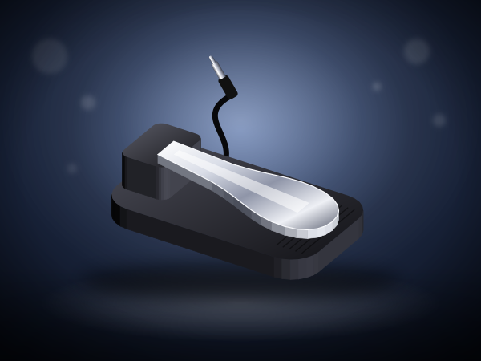
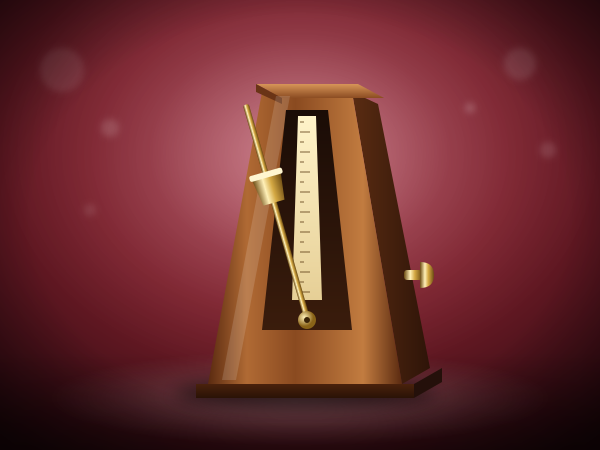

HD 280 Pro Closed-Back Headphones
Closed-back studio headphones. I look for comfort over a long session and an honest sound.
I suggest it for late practice in an apartment or a shared home.
Check today's price on AmazonLeave your email, phone and how you found us. I read every message and listen to every recording myself.
Home / Shop / Christmas Gifts for Pianists
Holiday gift guideThe best Christmas gifts for pianists are things they will use: practice headphones, a piano-style pedal, a stand light, a great recording or a piano keepsake. Below are my picks, plus eight Hanukkah gifts for musicians.
Affiliate disclosure. As an Amazon Associate I earn from qualifying purchases. Some links on this page are affiliate links; buying through them costs you nothing extra.
Links go to Amazon.com; Amazon ships many items internationally.
Illustrations show the type of product; see the exact item and its photos on Amazon.
Every December, students ask me what to give the pianist in their family. My answer is always the same: something that disappears into daily practice, or something that makes listening a pleasure. Below are practical gifts, gifts for the ears, piano keepsakes for the home and, for families who celebrate Hanukkah, eight small gifts for eight nights.
Private online lessons with me, Dr. Maria Pisarenko, D.M.A., concert pianist and professor. A gift certificate suits an adult beginner, a returning player, or a parent who always wanted to learn, wherever they live.
Give online lessons →This page belongs to the Online Piano University shop because the people who learn with me, in my free 41-lesson course and later with my upcoming method books, are also the people who love music, and they are often the ones receiving or giving these gifts.
The most welcome gifts disappear into daily practice.
Closed-back studio headphones. I look for comfort over a long session and an honest sound.
I suggest it for late practice in an apartment or a shared home.
Check today's price on Amazon
The listing says piano-style sustain pedal, universal polarity. Check compatibility with your keyboard before you buy.
I suggest it for any beginner whose keyboard came with a small square switch pedal.
Check today's price on Amazon
In short, LED piano lamp for the music rest. I like tools that stay out of the way.
I suggest it for reading music at an upright or digital piano in the evening.
Check today's price on Amazon
Classic mechanical Wittner metronome. Use it to build a steady habit.
I suggest it for a player who wants no screen at the piano, only a steady beat.
Check today's price on Amazon
Sitting at the right height changes how you sound. Here: adjustable height padded bench.
I suggest it for a home where more than one person plays, so each can set their own height.
Check today's price on AmazonGreat recordings and headphones that let them through.
In short, open-back reference headphones. Choose closed-back or open-back by where you practice.
I suggest it for practicing alone, when you want the most natural piano sound.
Check today's price on Amazon
The listing says collector's box set of Gould's Bach recordings. Comfort and faithful sound matter most.
I suggest it for a pianist building a library of great recorded playing.
Check today's price on AmazonA pair a musician would notice. Here: deutsche Grammophon complete Michelangeli CD box.
I suggest it for a pianist building a library of great recorded playing.
Check today's price on AmazonClassical piano box set for a Beethoven fan. A gift for someone who listens seriously.
I suggest it for a pianist building a library of great recorded playing.
Check today's price on AmazonKeepsakes and a few festive touches.

The listing says miniature wood grand piano figurine. Easy to give and easy to enjoy.
I suggest it for a grandparent who played as a child, or a student's first recital.
Check today's price on AmazonIn short, crystal-studded gold-plated piano music box. Comfort and faithful sound matter most.
I suggest it for a grandparent who played as a child, or a student's first recital.
Check today's price on AmazonBlack baby grand music box with bench. A pair a musician would notice.
I suggest it for a grandparent who played as a child, or a student's first recital.
Check today's price on AmazonA thoughtful small gift for a pianist or music lover. Here: wooden piano model kit gift.
I suggest it for an adult who loves building things by hand.
Check today's price on Amazon
In short, music note throw blanket. Easy to give and easy to enjoy.
I suggest it for a gift for a parent or grandparent who loves music.
Check today's price on Amazon
The listing says Chopin heroic-dance sheet-music art for pianists. A light touch of music for a shelf or desk.
I suggest it for decorating a practice corner or a music room at home.
Check today's price on AmazonRead the listing for size and material. Here: sheet-music print kitchen towels.
I suggest it for a gift for a parent or grandparent who loves music.
Check today's price on AmazonEight small gifts, one for each night of Hanukkah.

Ceramic piano and music-note coasters. A thoughtful small gift for a pianist or music lover.
I suggest it for a stocking stuffer for a student, a teacher or a whole studio.
Check today's price on AmazonThe listing says piano and music-note socks. Easy to give and easy to enjoy.
I suggest it for a stocking stuffer for a student, a teacher or a whole studio.
Check today's price on AmazonIn short, piano keychain. A light touch of music for a shelf or desk.
I suggest it for a stocking stuffer for a student, a teacher or a whole studio.
Check today's price on Amazon
Bookmark/page holder for music books. Use it to build a steady habit.
I suggest it for keeping a new method book open on the music rest.
Check today's price on Amazon
Small tools like this make daily practice easier. Here: practice log for lessons.
I suggest it for an adult beginner building a daily practice habit.
Check today's price on AmazonIn short, book on music and the brain. A good way to live with music.
I suggest it for a music lover who reads, or a teacher's bookshelf.
Check today's price on AmazonThe listing says crystal music-note figurine. A light touch of music for a shelf or desk.
I suggest it for a grandparent who played as a child, or a student's first recital.
Check today's price on AmazonRead the listing for size and material. Here: musician coffee mug.
I suggest it for a teacher's desk or a student's practice break.
Check today's price on AmazonSomething they will use every day: practice headphones, a piano-style sustain pedal, a stand light or a metronome. For a pianist who has everything, a box set of great recordings.
Small gifts for each night work well: music coasters, music socks, a piano keychain, a page clip, a practice journal, a book on music and the brain, a crystal music note and a musician's mug. They are listed together above.
Earlier than you think. Delivery dates appear on each Amazon listing, and they move as December fills up.
A gift certificate for online lessons with me works for any level. Gift certificates bought by December 31 keep today's lesson price.
Yes. As an Amazon Associate I earn from qualifying purchases, at no extra cost to you. I do not print prices; open the listing on Amazon to check today's price.
Small gifts for pianists and music students.
Gift ideas for pianists by size of gift.
Music gifts for adults who love to listen.
The shop exists to support your learning. The learning itself can start free: all 41 lessons of my beginner course are published, and I give feedback on your playing at no charge. When you want a teacher, I take private students online.
▶ Start the free 41-lesson course Private online lessons Send me your playing for feedback → Give online piano lessons
Send a message or attach a recording. Email, phone and how you found us help me answer you properly.
The first steps to start the right way — no bad habits to un-learn. Join fellow beginners learning with a real university teacher.
✓ Thank you — check your inbox!
No spam — just piano. Unsubscribe anytime.
Every decade brings its own music and its own obstacles. Find the plan for yours:
Learn piano in your 20s · Learn piano in your 30s · Learn piano in your 40s · Learn piano in your 50s · Learn piano in your 60s · Learn piano in your 70s and beyond
Online Piano University is run by one teacher. I read every message and listen to every recording myself.
Contact
maria@onlinepianouniversity.com
Full contact page
Feedback on your playing
Free 41-lesson course
Piano lessons by age
Free Starter Guide
✓ Thank you — check your inbox!
Follow along